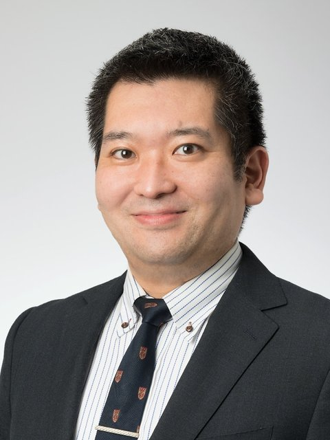

J-SOX / IPO Readiness
京都を拠点に、上場企業・IPO準備企業の内部統制とIPO準備を支援する公認会計士です。
PwC Japan有限責任監査法人で約8年、上場企業監査と内部統制（J-SOX）評価に従事しました。
文書化から監査法人対応、上場審査から逆算した体制構築まで、助言で終わらず実務まで踏み込みます。
内部統制・J-SOX
IPO準備
ひとつでも当てはまれば、直す価値のある構造課題です。
逆に、ひとつも当てはまらなければ、外部支援は不要です。
あるべき姿と現状の差分を、優先度付きの課題リストとして提示します。
御社固有の課題リストを先にお見せします。判断はそれを見てからで結構です。
業務記述書・フローチャート・RCMを、現場の実態に合わせて過不足なく作り直します。
「文書のための文書」は作りません。
整備状況評価・運用状況評価の設計と実施を支援します。
評価範囲の根拠から監査法人に説明できる状態にします。
監査法人側の実務を8年経験した立場から、指摘の意図を翻訳し、1往復で終わる回答を設計します。
上場審査から逆算して、いつまでに・何を・どの順で整備するかを工程表にします。
タスクの列挙ではなく、優先順位と依存関係まで落とします。
月次・四半期決算を締められる体制、開示（有報・短信水準）に耐える体制を、現在の人員を前提に設計します。
増員ありきの絵は描きません。
N-2期からの内部統制整備を、上記の内部統制支援と同じ品質で実施します。
要求事項の意図を翻訳し、対応の優先順位を整理します。
すべてに同時対応しようとして決算が止まる、を防ぎます。
現状をお聞きします。
課題リスト＋優先度＋対応方針を文書で提示し、報告会（1時間）で説明します。
診断結果をもとに、必要な範囲だけを設計します。継続支援に進む場合、診断料は初月報酬に充当します。
Fee
診断パッケージ 一律 10万円（税別）
継続支援 10万円／人日（税別）
いずれも導入価格です。近日、料金の改定を予定しています。
継続支援は、支援範囲に応じて月あたりの稼働日数で個別に設計します。
診断だけで終えていただいて構いません。継続支援に進む場合、診断料は初月報酬に充当します。
監査法人のアドバイザリーと何が違いますか。
規模と距離です。担当が変わらず、意思決定が速く、必要な範囲だけを依頼できます。
監査法人の指摘の「意図」を翻訳できるのは、監査する側を8年やってきたからです。
IPOはまだ検討段階ですが、相談できますか。
できます。「上場すべきかどうか」の整理からで結構です。
検討段階で体制の現在地を知っておくことは、目指すと決めた後の工程を大きく短くします。
期中や評価の途中からでも依頼できますか。
できます。現状の成果物を確認した上で、間に合わせ方から一緒に考えます。
費用はどのくらいかかりますか。
診断は一律10万円（税別）、継続支援は10万円／人日（税別）が目安です。
支援範囲に応じて月あたりの稼働日数で設計します。診断だけで終えていただいて構いません。
京都以外でも対応できますか。
関西圏は訪問可能です。それ以外の地域もオンラインで対応しています。

佐藤 健司（さとう けんじ）
公認会計士・税理士。PwC Japan有限責任監査法人（京都）にて約8年、
製造業・サービス業・IT企業を中心に、売上10億〜300億円規模の上場企業監査と
J-SOX内部統制評価を現場責任者（主査）として担当。
IPO準備企業／上場直後の企業の現場責任者も多数経験。売上1兆円規模の監査にも従事。
佐藤健司公認会計士事務所 代表。京都市。
まずは30〜60分のオンライン相談から。
「ざっくり相談したい」の一文で大丈夫です。